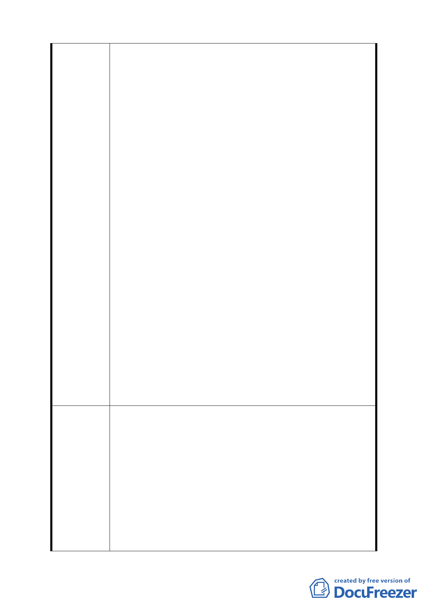

建議辦法
地，使本計畫形同虛設，建請排除該要點之規定辦理。
七、土地開發係屬民間行為，開發者依規定申請開發，並已
提供適度之回饋金給市政府，要求開發者無償提供退縮
土地給市府，不符社會公義，恐遭民怨。
八、本計畫案規定需坡度 30％以下之土地才可建築，故建
請依上開允許建築面積計算回饋金。本地區又屬山坡
地，行政院農委會已有山坡地開發利用回饋金繳交辦法
（以當期公告之土地現值 6％至 12％計算），本計畫案
若再要求繳交過高之回饋金，將使開發者卻步，有違本
計畫案之美意。
九、本案開發依計畫內容之程序曠日費時，關卡重重且多屬
委員會審查方式，立法精神雖屬鼓勵開發，但計畫內容
文字卻又重重限制，開發者與審查者之意見落差恐怕相
當大，申請流程及時間，開發者相當難掌握，故建請將
申請時間及開發時間延長。
十、本地區之吸引人在於山林景觀，屋頂平台又為賞景之最
好地點，若限制建物屋頂為斜屋頂，則是建設上之一大
缺憾。建請建築師依其專業配合景觀作規劃，再由都審
委員在審議時對造型把關。
十一、溫泉管理計畫係屬水利署管理，水利署本身尚未整理
出供水總量，開發者無法取得合法之水量證明。
十二、開發者最大成本是時間，時間係關係到經營策略及資
金投入成本，若無確切之開發流程及時間表，將使開發
業者卻步，則本計畫案只是望梅止渴而已，對本計畫區
之發展無實際之功效。
一、建議山坡地空地不需集中設置。
二、建議允許設立溫泉旅館。
三、建議容許建築建蔽率為 50％及容積率 180％。
四、建議建物高度提高為 3 層樓及 15 公尺。
五、建議允許地下室開挖供停車使用。
六、建議不受臺北市山坡地開發建築要點限制開發。
七、建議臨接之面前道路所退縮之土地不需捐贈給台北市政
府。
八、建議回饋計算基準以允許建築之土地（坡度 30％以下）
面積為準，回饋金額依當年度公告現值總合之 2％計
10